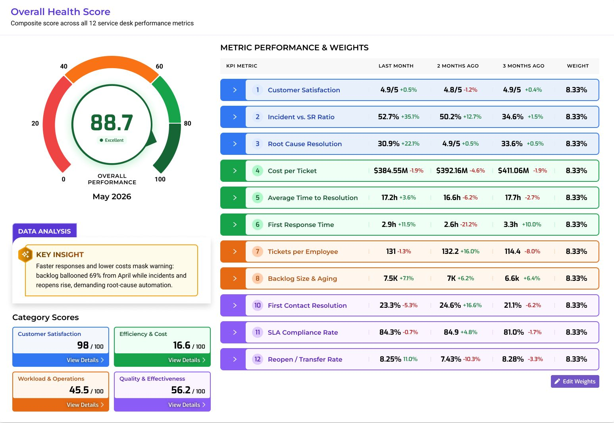
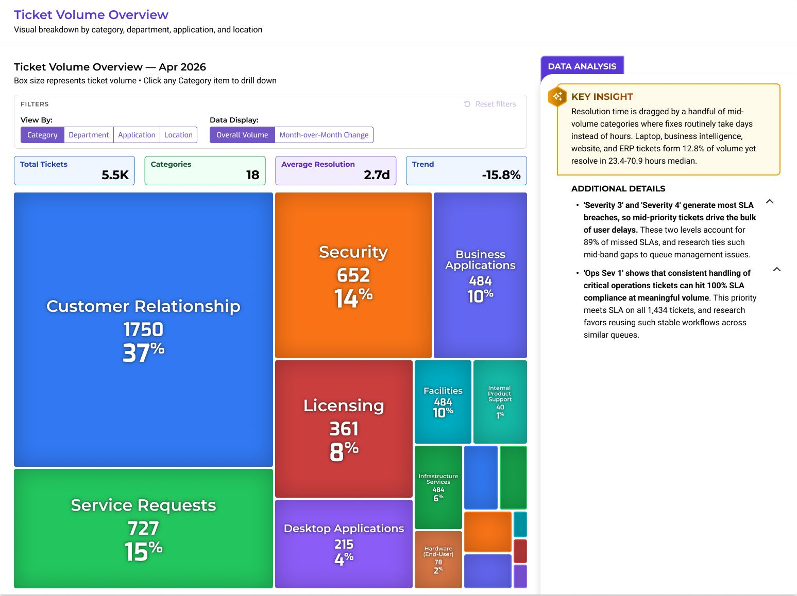
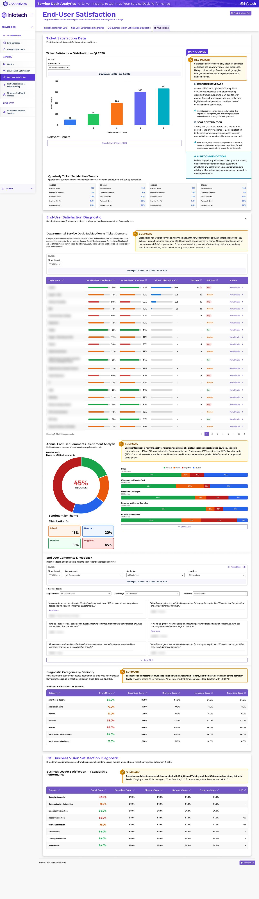

CIO Analytics
Infotech’s platform for running the IT department from a single view: data, insights, benchmarks and advice in one place.
- Infotech
- 2025–now
- Product design & front-end development
- Back-end developers & data engineers
- FigmaRuby on RailsTailwind CSSViewComponentLookbookHotwire (Turbo + Stimulus)Highcharts
My contribution
I worked on a cross-functional team: back-end developers and data engineers built the data platform and services, and I owned the product design and the front end that IT leaders use.
Designed
- Key Insights component, used app-wide, with multiple variations
- Contributions to the app's design system
- Chart redesigns
- Condensed tables for easier scanning
- Save-syncing flow
- Login and error pages
Built
- Front end of a Ruby on Rails app, styled with Tailwind CSS and a shared design preset
- Reusable UI components with ViewComponent, documented in Lookbook
- Interactivity with Hotwire (Turbo + Stimulus), no JavaScript framework
- Highcharts charts for the v2 dashboards, through the in-house charting-dashboard engine
- Marketing page (design by the Infotech design team)
Overview
CIO Analytics brings data, business intelligence, AI and Infotech’s advisory into one integrated platform. It connects and normalizes an organization’s IT data, turns it into dashboards and insights, benchmarks it against peers, and pairs the results with Infotech’s research to deliver data-driven advice.
Around that core, IT leaders can prioritize initiatives, plan projects and track the value they deliver, use AI to surface insights and answer questions about their data, and work in focused modules such as Application Discovery and Identity Governance.
The challenge
IT leaders manage data spread across many systems and have limited time to interpret it. The platform combines data, peer benchmarks, advisory content and AI-generated insights, and each layer must remain clear and actionable for senior IT decision-makers.
Process & key decisions
Key Insights component: what it does, why it needed variations, and how it's built to stay consistent across the app.


More screens






Result
The outcome: launch, adoption, feedback.